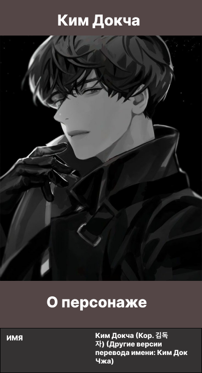

Описание
Ким Докча — главный герой книги «Всеведущий читатель». Он единственный читатель веб-романа «Три способа выжить в разрушенном мире», апокалиптического фэнтезийного рассказа, написанного tls123, который прочитал его до конца.
У Ким Докча худое лицо и бледная кожа. Его волосы тонкие и черные, у него длинные ресницы и темные круги под глазами. Его лицо спокойное и свежее, хотя и несколько раздражённое.
Есть заметная разница в его внешности, когда он улыбается и когда ничего не выражает. Став взрослым, он имеет стройное телосложение, будучи довольно худым до начала сценариев, хотя он стал довольно мускулистым из-за повышения показателя Силы.
У него есть шрамы от ожогов/загар из-за вероятностного шторма, который он пережил после Гигантомахии. У него также есть шрамы на руках и, предположительно, на остальной части его тела, а также от многочисленных драк, через которые он прошел. На его левом предплечье "вышит" номер 6424 из его короткого периода, когда он маскировался под Раба в 73-м Царстве Демонов.
Другие персонажи часто описывают его как простого или непривлекательного, настолько, что он получает модификатор воплощения «Самый уродливый король». Позже выясняется, что его внешний вид подвергается «цензуре» для тех, кто на него смотрит. В Темном замке, Ли Джихе говорит, что не может вспомнить, как он выглядит, в 73-м Царстве Демонов, когда кадры сценария 73-го Короля Демонов демонстрируются в Комплексе Сисвиц, сам Ким Докча замечает, что его лицо на экране искажено.
Внешний вид